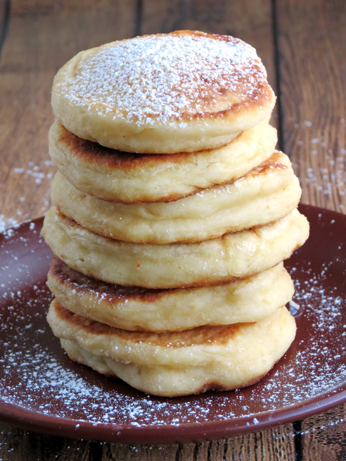

Cottage Cheese Pancakes

Ingredients (3 servings):
- Eggs (3)
- Flour (1/4 cup)
- Butter (2 tbs melted)
- Salt (1/4 tsp)
- Cottage Cheese (1 cup)
Directions:
- Strain the cottage cheese using a sieve or a similar tool until it dries out. Eta: 1 hr.
- Using a mixing bowl, beat the eggs. Then combine with the cottage cheese, flour, melted butter, and salt to form a batter.
- Cook the batter on medium-high heat until lightly browned.